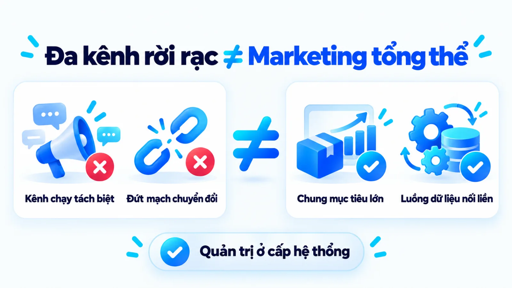
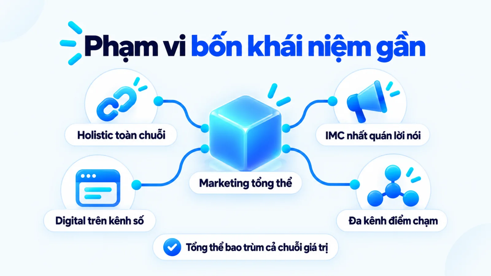
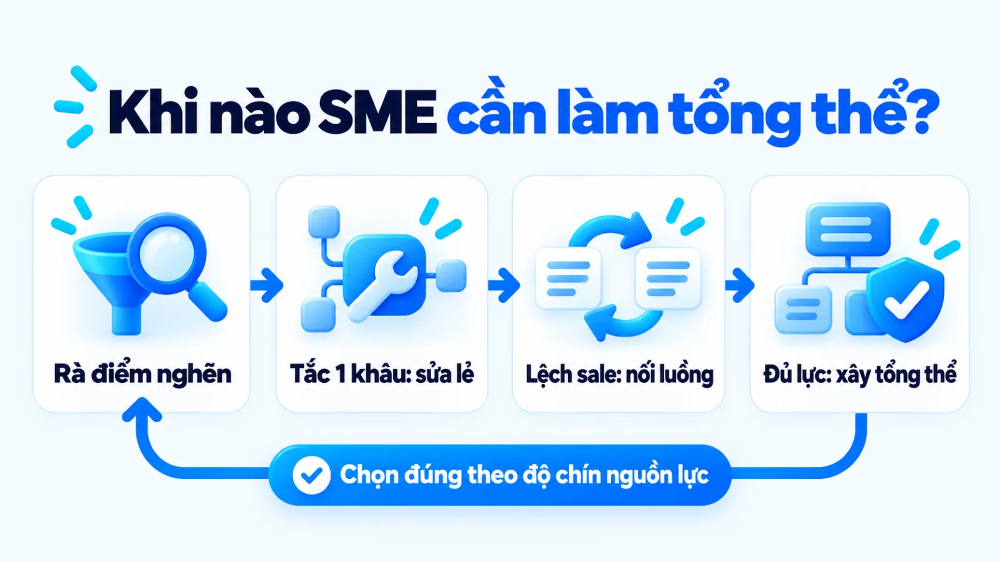
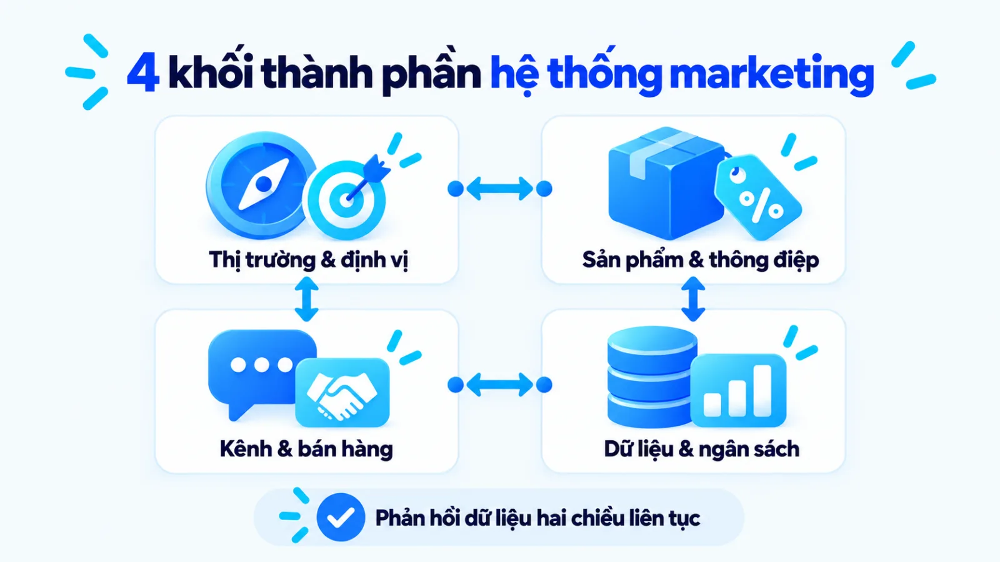
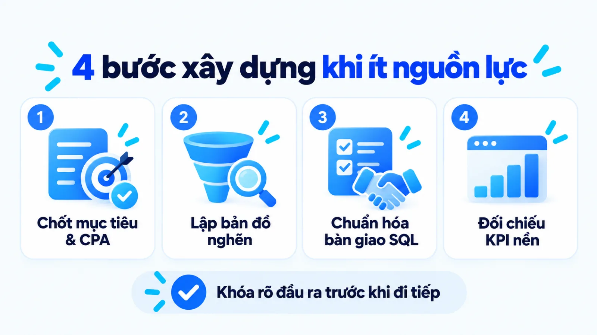
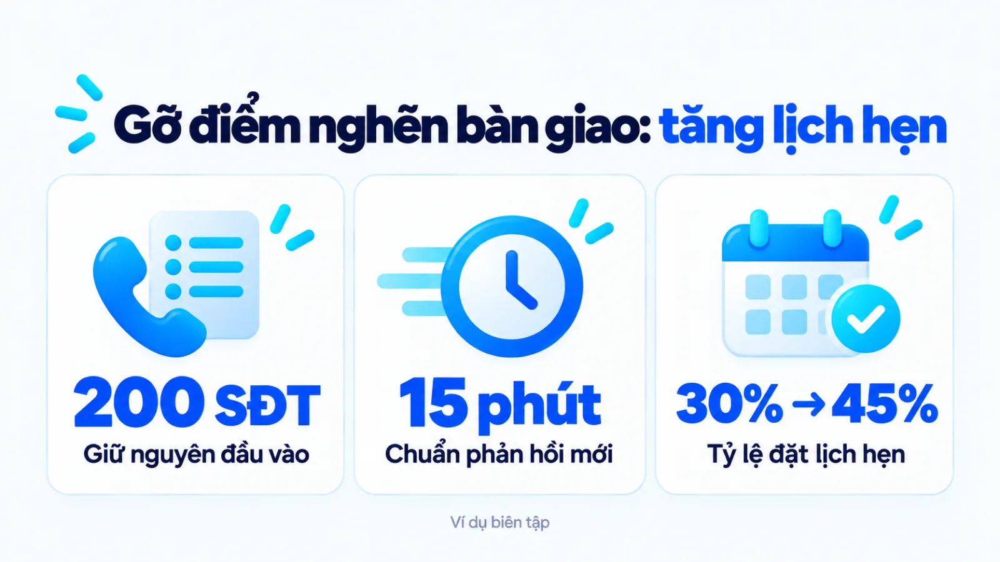
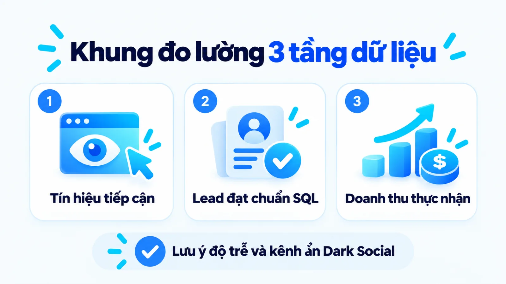

Marketing tổng thể là gì? Cách bắt đầu cho SME
Marketing tổng thể là cách tiếp cận quản trị cấp hệ thống giúp doanh nghiệp kết nối nghiên cứu thị trường, sản phẩm, định giá, phân phối, truyền thông và bán hàng xoay quanh một mục tiêu kinh doanh chung. Với doanh nghiệp vừa và nhỏ khi ngân sách và nhân sự còn mỏng, quyết định quan trọng nhất là chọn thời điểm đồng bộ toàn hệ thống hay tập trung gỡ một điểm nghẽn đang làm đứt mạch chuyển đổi. Nếu mở thêm kênh quảng cáo khi thông điệp định vị chưa rõ hoặc khâu bàn giao khách hàng tiềm năng còn rời rạc, chi phí sẽ tăng nhanh mà doanh thu thực nhận vẫn đứng yên. Tôi là Lê Tuấn Việt, Marketing Leader tại TAKI Group. Trong bài viết này, tôi làm rõ ranh giới giữa marketing tổng thể với các khái niệm dễ nhầm, tiêu chí chọn thời điểm triển khai và thứ tự ưu tiên đo lường khi nguồn lực hạn chế.
- Đăng ngày
- Cập nhật

Tóm tắt nhanh
- Marketing tổng thể là phương pháp quản trị kết nối nghiên cứu thị trường, sản phẩm, giá, phân phối, truyền thông và bán hàng theo cùng một mục tiêu kinh doanh, không đồng nghĩa với việc mở thật nhiều kênh quảng cáo.
- Doanh nghiệp vừa và nhỏ chỉ nên đồng bộ cấp hệ thống khi các điểm chạm đang triệt tiêu hiệu quả của nhau và đã có mục tiêu rõ, dữ liệu cơ bản cùng người điều phối có thẩm quyền thật.
- Khi nguồn lực hạn chế, cách bắt đầu an toàn nhất là đi theo bốn bước: chốt mục tiêu kinh doanh ưu tiên, rà soát điểm nghẽn hành trình mua, giao đầu ra cụ thể và kiểm chứng dữ liệu trước khi nhân rộng.
- Đo lường hiệu quả marketing tổng thể phải tách bạch ba tầng gồm tín hiệu tương tác, hành vi hoặc khách hàng tiềm năng đạt chuẩn và kết quả kinh doanh xác nhận, đồng thời tính đến giới hạn quy kết đa điểm chạm.
Mục lục bài viết8 phần
Marketing tổng thể là gì?
Marketing tổng thể là cách tiếp cận quản trị cấp hệ thống nhằm kết nối nghiên cứu thị trường, cấu trúc sản phẩm, định giá, phân phối, truyền thông, bán hàng và chăm sóc sau mua xoay quanh mục tiêu kinh doanh chung. Thay vì chạy nhiều kênh rời rạc, hướng đi này đồng bộ chiến lược với năng lực vận hành tại mọi điểm chạm khách hàng.
Theo định nghĩa được tái phê duyệt năm 2017 của American Marketing Association (AMA, Hiệp hội Marketing Hoa Kỳ), bản chất của marketing là tập hợp các thiết chế và quy trình nhằm tạo ra, truyền thông, phân phối và trao đổi những giá trị có ý nghĩa cho khách hàng, đối tác cùng xã hội. Khi đặt dưới góc độ quản trị, đây là một chuỗi quyết định thương mại liên kết chặt chẽ từ lúc hình thành giải pháp đến khi thu nhận doanh thu.

Tại thị trường Việt Nam, nhiều SME (doanh nghiệp vừa và nhỏ) thường mặc định cụm từ này đồng nghĩa với một gói dịch vụ thuê ngoài chạy đủ mọi kênh trực tuyến. Điểm tôi muốn làm rõ ngay từ đầu là sự khác biệt giữa việc mở thêm nhiều kênh hiển thị với việc thiết kế một hệ thống tạo và chuyển đổi giá trị. Một doanh nghiệp có thể hiện diện cùng lúc trên mạng xã hội, công cụ tìm kiếm và sàn thương mại điện tử nhưng vẫn thất thoát ngân sách nếu mỗi kênh nói một thông điệp và đội bán hàng không biết khách đã đọc gì trước đó.
Phạm vi của marketing tổng thể trong doanh nghiệp
Theo tài liệu tổng hợp năm 2024 trên Wikipedia về quản trị marketing dựa trên khung lý thuyết của Philip Kotler và Kevin Lane Keller, hoạt động quản trị tiếp thị trong tổ chức gắn trực tiếp với việc định hướng cấu trúc sản phẩm, thiết lập mức giá, chọn kênh phân phối và tổ chức truyền thông để đáp ứng nhu cầu người mua. Phạm vi của marketing tổng thể vì thế vượt ra ngoài phòng truyền thông và bao quát bốn mắt xích sau:
- Nghiên cứu thị trường và chọn phân khúc: Xác định quy mô nhu cầu, hành vi mua sắm và nhóm khách hàng mục tiêu có khả năng sinh lời cho doanh nghiệp.
- Thiết kế cấu trúc sản phẩm và chính sách giá: Đóng gói giải pháp, định vị giá trị khác biệt và xây dựng khung giá phù hợp với biên lợi nhuận cùng khả năng chi trả của khách hàng.
- Tổ chức kênh phân phối và truyền thông tiếp cận: Đưa sản phẩm cùng thông điệp nhất quán tới đúng điểm chạm mà người mua mục tiêu thường xuyên tra cứu hoặc giao dịch.
- Phối hợp bán hàng và giữ chân khách hàng: Kết nối luồng dữ liệu người mua tiềm năng với quy trình tư vấn chốt đơn, chăm sóc sau bán và khai thác giá trị vòng đời khách hàng.
Quan hệ giữa chiến lược, vận hành và điểm chạm
Chiến lược đóng vai trò xác định doanh nghiệp bán giá trị gì cho ai, vận hành nội bộ bảo đảm năng lực cung ứng lời hứa đó, còn các điểm chạm là nơi khách hàng trực tiếp kiểm chứng thông điệp. Ba lớp này tác động hai chiều lên nhau trong suốt chu kỳ kinh doanh. Khi điểm chạm quảng cáo hứa hẹn tốc độ phục vụ vượt quá khả năng xử lý thực tế của bộ phận vận hành, chi phí thu hút khách hàng càng lớn sẽ càng đẩy nhanh tốc độ mất uy tín thương hiệu.
Marketing tổng thể khác khái niệm gần thế nào?
Marketing tổng thể khác với các khái niệm gần nghĩa như Holistic Marketing (marketing toàn diện), IMC (truyền thông marketing tích hợp), digital marketing (tiếp thị số) và multichannel marketing (marketing đa kênh) ở phạm vi can thiệp vào cấu trúc sản phẩm, quy trình bán hàng và đầu ra cuối cùng cần chịu trách nhiệm. Bảng dưới đây đối chiếu năm khái niệm này theo phạm vi mục tiêu và cơ chế phối hợp.
| Khái niệm đối chiếu | Phạm vi và mục tiêu trọng tâm | Đầu ra và cách phối hợp nội bộ |
|---|---|---|
| Marketing tổng thể | Toàn bộ chuỗi tạo giá trị từ thị trường, sản phẩm, giá, kênh đến bán hàng | Doanh thu thực nhận, biên lợi nhuận và sự đồng bộ giữa marketing với sale |
| Holistic Marketing | Triết lý quản trị xem mọi bộ phận doanh nghiệp đều phụ thuộc lẫn nhau | Sự gắn kết giữa bốn cấu phần: mối quan hệ, tích hợp, nội bộ và hiệu suất |
| Truyền thông tích hợp | Hoạch định các điểm tiếp xúc thương hiệu để giữ thông điệp nhất quán | Nhận thức thương hiệu đồng bộ và hiệu quả cộng hưởng giữa các kênh xúc tiến |
| Digital Marketing | Hoạt động tiếp thị triển khai trên nền tảng số, thiết bị điện tử và internet | Lưu lượng truy cập, tương tác và khách hàng tiềm năng phát sinh từ kênh số |
| Marketing đa kênh | Sử dụng nhiều kênh trực tiếp và gián tiếp độc lập để tiếp cận người mua | Độ phủ hiện diện và doanh số ghi nhận riêng trên từng kênh bán hoặc xúc tiến |
Bảng phân biệt trên đặt các khái niệm trong điều kiện doanh nghiệp tách bạch rõ chức năng thương mại. Trong thực tế vận hành tại SME Việt Nam, ranh giới giữa các thuật ngữ có thể giao thoa tùy theo quy mô phòng ban và cách phân quyền của ban giám đốc.

Holistic Marketing và cách dùng tại Việt Nam
Trong học thuật quốc tế, mục từ năm 2024 trên Wikipedia về Holistic Marketing dẫn lại công trình của Philip Kotler và Kevin Lane Keller, xác định phương pháp này gồm bốn cấu phần: marketing mối quan hệ, marketing tích hợp, marketing nội bộ và marketing hiệu suất. Tại Việt Nam, cụm từ marketing tổng thể thường được giới làm nghề dùng với nghĩa thực dụng hơn để chỉ bài toán nối thông suốt từ bước lập kế hoạch marketing, tổ chức kênh tiếp cận cho tới khâu chuyển đổi đơn hàng cùng đội ngũ sale.
Digital marketing, IMC và triển khai đa kênh
Nhiều chủ doanh nghiệp đánh đồng việc mở rộng các kênh digital marketing với việc đã có một hệ thống tổng thể. Tuy nhiên, tiếp thị số chỉ giới hạn ở nhóm công cụ trên môi trường điện tử. Trong khi đó, theo định nghĩa của American Marketing Association và tài liệu tổng hợp năm 2024 trên Wikipedia về IMC, truyền thông marketing tích hợp tập trung phối hợp các công cụ xúc tiến để tạo thông điệp thống nhất lấy khách hàng làm trung tâm chứ không trực tiếp quyết định cấu trúc giá hay kịch bản chốt đơn.
Tương tự, tài liệu năm 2024 trên Wikipedia về marketing đa kênh chỉ rõ việc sử dụng nhiều kênh trực tiếp và gián tiếp như cửa hàng, website, mạng xã hội hay thư điện tử mới dừng ở bước mở rộng điểm tiếp xúc. Nếu các kênh này vận hành độc lập, tự đặt chỉ tiêu riêng và không chia sẻ dữ liệu lịch sử mua hàng, doanh nghiệp chỉ đang làm đa kênh rời rạc chứ chưa vận hành marketing tổng thể.
Khi nào SME cần làm marketing tổng thể?
Doanh nghiệp vừa và nhỏ cần chuyển sang làm marketing tổng thể khi các hoạt động quảng cáo, nội dung và bán hàng bắt đầu triệt tiêu hiệu quả của nhau do lệch thông điệp hoặc đứt gãy khâu xử lý khách hàng tiềm năng. Ngược lại, khi sản phẩm chưa ổn định hoặc chỉ tắc ở một khâu duy nhất, việc gỡ đúng điểm nghẽn đó mang lại hiệu quả thực tế hơn theo ba phương án trong bảng dưới đây.
| Phương án lựa chọn | Phù hợp khi doanh nghiệp có điều kiện | Đánh đổi và việc cần ưu tiên |
|---|---|---|
| Sửa một điểm nghẽn | Sản phẩm mới thử nghiệm, ngân sách hẹp hoặc chỉ tắc ở một khâu chuyển đổi rõ | Chưa mở rộng quy mô nhanh; tập trung sửa trang đích hoặc kịch bản chốt đơn trước |
| Đồng bộ luồng cốt lõi | Đã có dòng tiền từ 1 đến 2 kênh chính nhưng lệch số liệu giữa marketing và sale | Cần thời gian chuẩn hóa quy trình; thống nhất định nghĩa khách đạt chuẩn và CRM |
| Xây hệ thống tổng thể | Sản phẩm đã chuẩn, có ngân sách duy trì tối thiểu theo quý và có người điều phối | Đòi hỏi cam kết từ ban giám đốc; kết nối đồng bộ từ định vị đến chăm sóc sau mua |
Bản đồ quyết định trên chỉ phát huy tác dụng khi doanh nghiệp đánh giá trung thực chất lượng sản phẩm hiện tại và năng lực thực thi của nhân sự nội bộ trước khi phân bổ ngân sách.

Dấu hiệu các hoạt động đang vận hành rời rạc
Khi quy mô nhân sự tăng từ một vài người lên thành các nhóm chuyên trách, sự đứt gãy giữa các bộ phận thường bộc lộ qua ba dấu hiệu vận hành cụ thể sau:
- Lệch kỳ vọng giữa thông điệp và tư vấn: Quảng cáo nhấn mạnh ưu đãi giá rẻ để lấy lượt điền biểu mẫu, trong khi đội bán hàng lại tư vấn gói dịch vụ cao cấp khiến tỷ lệ từ chối tăng vọt.
- Đứt mạch dữ liệu khi bàn giao khách hàng: Nhân viên tư vấn gọi điện nhưng không biết khách hàng đã xem sản phẩm nào trên website hay đã nhắn tin hỏi gì trên fanpage trước đó.
- Tranh chấp công lao nhưng thiếu người chịu trách nhiệm doanh thu: Báo cáo quảng cáo và nội dung đều ghi nhận chỉ số hoàn thành tốt, nhưng tổng doanh thu thực nhận của công ty vẫn sụt giảm qua nhiều tháng.
Điều kiện tối thiểu về mục tiêu, dữ liệu và nhân sự
Để tránh biến dự án đồng bộ thành một bản kế hoạch nằm trên giấy, tôi chỉ khuyến nghị doanh nghiệp bắt tay vào dựng hệ thống tổng thể khi đã hội đủ ba điều kiện nền tảng. Thứ nhất, ban giám đốc phải chốt được mục tiêu kinh doanh định lượng và biên lợi nhuận cho phép. Thứ hai, doanh nghiệp cần có dữ liệu lịch sử cơ bản về tỷ lệ chuyển đổi ở từng khâu. Thứ ba, phải có một người điều phối đủ thẩm quyền làm việc ngang hàng với cả nhóm marketing lẫn nhóm bán hàng.
Trường hợp nên xử lý một điểm nghẽn trước
Có phải cứ thấy doanh số chững lại là cần đập đi xây lại toàn bộ hệ thống marketing không? Câu trả lời thực tế là không. Nếu khách hàng vào trang đích rất nhiều nhưng thoát ra ngay vì tốc độ tải chậm, hoặc đội tư vấn để trôi tin nhắn sau nhiều giờ mới phản hồi, việc vẽ thêm kế hoạch đa kênh chỉ làm lãng phí thời gian. Chưa rõ điểm nghẽn thì đừng thêm kênh.
Hệ thống marketing tổng thể gồm thành phần nào?
Một hệ thống marketing tổng thể vận hành được trong thực tế gồm bốn thành phần cốt lõi liên kết tuần tự với nhau: nền tảng thị trường và định vị, cấu trúc sản phẩm kèm thông điệp, mạng lưới kênh tiếp cận gắn với bán hàng, và cơ chế phân bổ dữ liệu cùng ngân sách. Bốn khối thành phần này được chuẩn hóa như sau:
- Thị trường, khách hàng và định vị: Xác định phân khúc người mua mục tiêu, bối cảnh phát sinh nhu cầu và lý do thực tế khiến khách hàng chọn doanh nghiệp thay vì đối thủ.
- Sản phẩm, thông điệp và trải nghiệm: Thiết kế cấu trúc gói giải pháp, thang giá trị sản phẩm và hệ thống thông điệp xuyên suốt tại mọi điểm tiếp xúc thương hiệu.
- Kênh tiếp cận, bán hàng và chăm sóc: Kết nối các kênh thu hút lưu lượng với quy trình tư vấn chốt đơn và kịch bản giữ chân, bán thêm sau giao dịch đầu tiên.
- Dữ liệu, ngân sách và cơ chế phối hợp: Quản lý luồng dữ liệu khách hàng, nguyên tắc phân bổ ngân sách theo giai đoạn và quy chế bàn giao đầu ra giữa các bộ phận.

Thị trường, khách hàng và định vị
Mọi quyết định kênh hay nội dung đều phải bắt nguồn từ việc hiểu rõ ai là người trả tiền và họ đang gặp rào cản gì khi mua hàng. Thay vì mô tả chân dung khách hàng bằng những tính từ chung chung, khối nền tảng này đòi hỏi doanh nghiệp tách bạch các nhóm nhu cầu, xác định tiêu chí khách hàng dùng để so sánh nhà cung cấp và chốt một định vị đủ rõ để đội ngũ không đi chệch hướng khi triển khai.
Sản phẩm, thông điệp và trải nghiệm
Sản phẩm trong hệ thống tổng thể được chia thành sản phẩm dẫn tạo phễu, sản phẩm chủ lực tạo doanh thu và sản phẩm gia tăng giá trị vòng đời. Để khách hàng không bị bối rối khi đi qua nhiều kênh khác nhau, doanh nghiệp cần thiết lập brand voice và tone of voice thống nhất, bảo đảm lời hứa trên mẫu quảng cáo khớp hoàn toàn với trải nghiệm thực tế khi khách dùng thử hoặc nhận tư vấn.
Kênh tiếp cận, bán hàng và chăm sóc khách hàng
Trong một hệ thống khép kín, kênh tiếp cận không kết thúc nhiệm vụ ở lượt nhấp hay lượt để lại số điện thoại. Luồng công việc phải quy định rõ thời gian phản hồi tối đa của nhân viên bán hàng, kịch bản xử lý từ chối theo từng nguồn kênh và quy trình chăm sóc sau mua để biến khách mua lần đầu thành người giới thiệu tự nhiên cho doanh nghiệp.
Dữ liệu, ngân sách và cơ chế phối hợp
Dữ liệu là mạch máu giúp người điều phối biết nên giữ hay cắt ngân sách ở khâu nào. Doanh nghiệp cần tổ chức thu thập và lưu trữ có hệ thống cả zero-party data và first-party data trên bảng quản trị chung, từ đó làm căn cứ đối soát chất lượng khách hàng tiềm năng giữa bộ phận tiếp thị và bộ phận kinh doanh.
Cách xây marketing tổng thể khi ít nguồn lực
Khi ngân sách và nhân sự có hạn, doanh nghiệp vừa và nhỏ không nên dựng cùng lúc mọi kênh mà cần đi theo quy trình bốn bước: chốt mục tiêu kinh doanh ưu tiên, kiểm tra điểm nghẽn trên hành trình mua, giao rõ đầu ra cho từng hoạt động cốt lõi, rồi mới kiểm chứng dữ liệu để điều chỉnh và mở rộng dần theo sơ đồ dưới đây.
- 01Chốt mục tiêu ưu tiênKhóa bài toán doanh thu, dòng sản phẩm chủ lực và ngưỡng chi phí cho phép trong kỳ đo.
- 02Kiểm tra điểm nghẽnRà soát dữ liệu chuyển đổi thực tế qua từng bước từ tiếp cận đến chốt đơn hàng.
- 03Chọn việc và giao đầu raTập trung nguồn lực vào hoạt động gỡ điểm nghẽn kèm người phụ trách và tiêu chuẩn bàn giao.
- 04Kiểm chứng và điều chỉnhĐối chiếu số liệu thực tế với mốc cơ sở để quyết định giữ, sửa hoặc nhân rộng.

Bước 1: Chốt mục tiêu kinh doanh và vấn đề ưu tiên
Chủ doanh nghiệp và người phụ trách marketing lấy mục tiêu doanh thu, lợi nhuận cùng biên chi phí bán hàng của kỳ tới làm dữ liệu đầu vào để khóa đúng một bài toán ưu tiên. Thay vì đặt mục tiêu mơ hồ như tăng nhận diện thương hiệu đồng thời đẩy doanh số cho mười mã hàng, đội ngũ chỉ chọn một dòng sản phẩm chủ lực có biên lợi nhuận tốt nhất để làm trục quy chiếu.
Đầu ra: Biên bản chốt 1 đến 2 mục tiêu kinh doanh định lượng kèm ngưỡng CPA (chi phí trên mỗi giao dịch thành công) tối đa cho phép; dấu hiệu hoàn tất là cả ban giám đốc, marketing và bán hàng cùng ký nhận một con số mục tiêu.
Bước 2: Kiểm tra hành trình mua và điểm nghẽn
Người điều phối marketing phối hợp với trưởng nhóm bán hàng rà soát toàn bộ dữ liệu chuyển đổi hiện có từ lúc khách hàng nhìn thấy thông tin đến khi thanh toán đơn hàng. Mục đích của bước này là chỉ ra chính xác khâu nào đang làm rơi rụng nhiều khách hàng tiềm năng nhất trên hành trình mua thực tế thay vì đoán cảm tính.
Đầu ra: Bản đồ hành trình khách hàng ghi rõ tỷ lệ chuyển đổi giữa các bước và khoanh vùng đúng một điểm đứt gãy lớn nhất cần xử lý trước trong tháng.
Bước 3: Chọn hoạt động, người phụ trách và đầu ra
Từ điểm nghẽn đã khóa và ngân sách khả dụng, người điều phối chọn các hoạt động thực thi trực tiếp giải quyết nút thắt đó, bao gồm cả việc thống nhất cách chọn content angle khớp với rào cản mua hàng của từng nhóm khách. Ở bước này, nhiều đội ngũ thường làm sai khi giao việc theo khối lượng đầu mục như viết hai mươi bài fanpage hay chạy ba chiến dịch quảng cáo mỗi tháng mà không gắn với tiêu chuẩn chất lượng khách hàng. Cách làm đúng là quy định rõ mỗi hoạt động phục vụ bước chuyển đổi nào, ai chịu trách nhiệm chính và tiêu chuẩn nghiệm thu dữ liệu bàn giao sang bộ phận kế tiếp là gì.
Đầu ra: Bảng phân công hoạt động theo kỳ đo ghi rõ đầu vào, người phụ trách, hạn hoàn thành và định nghĩa SQL (khách hàng tiềm năng đủ điều kiện bán hàng) được hai phòng ban chấp thuận.
Bước 4: Triển khai, kiểm tra dữ liệu và điều chỉnh
Trong quá trình vận hành, quản lý marketing theo dõi các sự kiện chuyển đổi trên hệ thống đo lường và đối chiếu với sổ doanh thu thực tế theo định kỳ hằng tuần hoặc hằng tháng. Theo tài liệu hướng dẫn năm 2024 của Google Analytics Help, một key event (sự kiện quan trọng) trên GA4 (Google Analytics 4) chỉ ghi nhận hành động mang lại giá trị trên nền tảng số, do đó người phụ trách bắt buộc phải kiểm tra chéo với tỷ lệ chốt đơn thực tế trước khi quyết định tăng hay giảm ngân sách.
Đầu ra: Báo cáo đối chiếu chỉ số baseline (mốc cơ sở ban đầu) với KPI (chỉ số đánh giá hiệu quả công việc) theo kỳ đo, kèm quyết định rõ ràng về việc giữ nguyên, chỉnh sửa thông điệp hay dừng hoạt động kém hiệu quả.
Ví dụ biên tập, không phải kết quả khách hàng thật
Xử lý điểm nghẽn bàn giao trước khi mở thêm kênh quảng cáo tại một phòng khám nha khoa
Trong ví dụ biên tập, không phải kết quả khách hàng thật này, một phòng khám nha khoa quy mô vừa tại Hà Nội dự định chi thêm ngân sách mở kênh TikTok vì thấy số khách đến khám từ Facebook chững lại. Khi áp dụng quy trình bốn bước để kiểm tra hành trình mua trong một tháng giả định, người phụ trách phát hiện phòng khám vẫn nhận 200 lượt để lại số điện thoại mỗi tháng, nhưng chỉ có 60 người đặt lịch hẹn vì nhân viên lễ tân thường gọi lại sau hơn bốn giờ làm việc và tư vấn chung chung không khớp với dịch vụ niềng răng mà khách vừa đọc trên bài quảng cáo. Thay vì mở kênh mới, phòng khám giữ nguyên ngân sách quảng cáo, chuẩn hóa bảng phân loại nhu cầu ngay trên biểu mẫu đăng ký và quy định lễ tân gọi lại trong vòng 15 phút theo đúng kịch bản dịch vụ khách đã chọn. Trong kịch bản giả định để minh họa cách tính này, khi tỷ lệ đặt lịch từ 200 số điện thoại tăng từ 30% lên 45% và tỷ lệ đến khám thực tế giữ ở mức 50% trên số lịch hẹn, số khách đến khám tăng từ 30 lên 45 người mà chưa tốn thêm chi phí mua lưu lượng mới.

Cách đo hiệu quả marketing tổng thể
Đo lường hiệu quả marketing tổng thể đòi hỏi doanh nghiệp tách bạch ba tầng dữ liệu gồm tín hiệu tiếp cận và tương tác ở đầu phễu, hành vi hoặc khách hàng tiềm năng đạt chuẩn ở giữa phễu, và kết quả kinh doanh đã xác nhận ở cuối phễu. Bảng khung đo lường dưới đây giúp người phụ trách đọc đúng vai trò và giới hạn của từng tầng chỉ số.
| Tầng chỉ số đo | Cách tính và nguồn dữ liệu chính | Giới hạn khi đọc và ra quyết định |
|---|---|---|
| Tầng 1: Tương tác | Lượt hiển thị, truy cập tự nhiên, tỷ lệ nhấp từ Google Search Console, GA4 và trình quảng cáo | Chỉ phản ánh sức hút thông điệp đầu phễu, không chứng minh được chất lượng người mua hay doanh thu |
| Tầng 2: Khách đạt chuẩn | Số sự kiện chuyển đổi vi mô, tổng số lead và tỷ lệ SQL xác nhận trên GA4 cùng bảng theo dõi sale | Phụ thuộc chặt vào độ chính xác của bộ lọc biểu mẫu và tốc độ phản hồi của nhân viên tư vấn |
| Tầng 3: Doanh thu thực | Doanh thu thực nhận, chi phí trên mỗi đơn hàng thành công và tỷ lệ mua lại từ CRM hoặc kế toán | Có độ trễ theo chu kỳ chốt đơn và chịu tác động đồng thời của chất lượng sản phẩm lẫn dịch vụ |
Khung đo lường ba tầng trên yêu cầu doanh nghiệp thống nhất cùng một kỳ đo và định nghĩa đơn vị đếm giữa bộ phận marketing với bộ phận bán hàng trước khi xuất báo cáo.
Tín hiệu tiếp cận và tương tác đầu phễu
Các chỉ số ở tầng đầu tiên cho biết thông điệp của doanh nghiệp có tiếp cận đúng tệp người đọc mục tiêu và đủ sức giữ chân họ ở lại trang đích hay không. Khi lưu lượng truy cập hoặc tỷ lệ nhấp sụt giảm, người phụ trách biết cần rà soát lại tiêu đề, góc tiếp cận nội dung hoặc phạm vi phân phối của chiến dịch. Tuy nhiên, việc dừng báo cáo ở tầng này là nguyên nhân phổ biến khiến phòng marketing báo thắng lợi nhưng quỹ tiền mặt của doanh nghiệp lại thâm hụt.
Khách hàng tiềm năng và hành vi đạt chuẩn
Ở tầng giữa phễu, hệ thống cần theo dõi các micro conversion trong hệ đo lường như hành vi xem bảng giá, tải tài liệu kỹ thuật hoặc điền biểu mẫu tư vấn có kèm thông tin sàng lọc. Tôi ưu tiên tách riêng tổng số lượt để lại thông tin khỏi số lượng khách hàng tiềm năng thực sự đạt chuẩn theo tiêu chí đã thống nhất với đội bán hàng, vì khi mẫu số chất lượng chưa đồng nhất thì CPL (chi phí trên một khách hàng tiềm năng) giảm thấp vẫn không giúp tăng số hợp đồng ký mới.
Kết quả kinh doanh đã xác nhận cuối phễu
Tầng dữ liệu thứ ba đối chiếu trực tiếp tổng chi phí tiếp thị và bán hàng đã bỏ ra với doanh thu thực thu, lợi nhuận gộp và tỷ lệ khách hàng quay lại mua lần hai trên phần mềm kế toán hoặc CRM (hệ thống quản trị quan hệ khách hàng). Trong các dự án cố vấn thực tế, việc nối thông suốt dữ liệu từ kênh tiếp cận tới kết quả cuối phễu luôn là bước quyết định hiệu quả đầu tư: tại dự án cố vấn Marketing cho Hệ thống Y Đa khoa TOMEC (tháng 8/2025 đến tháng 8/2026) do tôi phụ trách, hoạt động tối ưu giúp tăng 40% khách hàng tiềm năng và giảm 54% CPL từ 1,2 triệu xuống 550.000 đồng mỗi data; còn tại dự án cố vấn cho Uyên Uyên Mart (tháng 5/2025 đến tháng 5/2026), việc đồng bộ hoạt động tiếp thị với điểm bán góp phần tăng 45% lượt khách đến cửa hàng và nâng doanh thu toàn hệ thống từ 3 lên 6 tỷ đồng mỗi tháng (tăng 100% so với cùng kỳ).
Giới hạn khi quy kết kết quả cho từng kênh
Ngay cả khi đã dựng đủ ba tầng chỉ số, người quản lý vẫn phải thận trọng trước bài toán quy kết công lao giữa các kênh. Tài liệu năm 2024 của Google Analytics Help định nghĩa attribution (quy kết) là việc gán mức độ đóng góp cho các quảng cáo, lượt nhấp và yếu tố khác trên lộ trình người dùng đi tới chuyển đổi, đồng thời giải thích mô hình quy kết theo hướng dữ liệu phân bổ mức đóng góp dựa trên dữ liệu thực tế của từng sự kiện quan trọng trong tài khoản.
Lưu ý về độ lệch quy kết trong vận hành thực tế
Không một công cụ đo lường tự động nào ghi nhận trọn vẹn 100% hành trình mua hàng. Khách hàng có thể đọc bài phân tích trên website, chia sẻ liên kết qua tin nhắn riêng tư rồi vài tuần sau mới gọi điện đặt hàng trực tiếp. Hiện tượng chia sẻ không để lại nguồn tham chiếu này thuộc phạm vi dark social và dữ liệu nguồn mà nếu bỏ qua, doanh nghiệp rất dễ cắt nhầm ngân sách của những kênh tạo nhu cầu ở đầu phễu.

Câu hỏi thường gặp về marketing tổng thể
Ngân sách nhỏ có triển khai marketing tổng thể được không?
Có, vì marketing tổng thể là tư duy đồng bộ mục tiêu kinh doanh, thông điệp sản phẩm và quy trình bán hàng chứ không bắt buộc phải chi tiền cho nhiều kênh cùng lúc. Doanh nghiệp ngân sách nhỏ vẫn có thể tập trung vào một kênh tiếp cận chủ lực nhưng thiết lập rõ tiêu chuẩn bàn giao khách hàng tiềm năng, chăm sóc sau mua và bảng đo lường xuyên suốt.
Nên tự làm marketing tổng thể hay thuê đơn vị bên ngoài?
Doanh nghiệp nên giữ phần định hướng mục tiêu kinh doanh, cấu trúc sản phẩm, dữ liệu khách hàng và quy trình chốt đơn ở trong nội bộ. Bạn chỉ nên thuê ngoài các hạng mục thực thi chuyên môn hoặc cố vấn chiến lược khi nội bộ đã có người đầu mối đủ năng lực nghiệm thu đầu ra và nắm quyền sở hữu tài khoản dữ liệu.
Ai nên điều phối marketing tổng thể tại doanh nghiệp nhỏ?
Người điều phối bắt buộc phải có thẩm quyền kết nối thông tin giữa marketing, bán hàng và dịch vụ khách hàng, thường là Marketing Leader hoặc chính chủ doanh nghiệp ở giai đoạn đầu. Nếu giao việc này cho một nhân sự chỉ chuyên chạy quảng cáo hay viết bài mà không được xem số liệu doanh thu thực nhận, hệ thống sẽ sớm quay lại trạng thái làm việc rời rạc.
Bao lâu nên rà soát lại hệ thống marketing tổng thể?
Đội ngũ cần kiểm tra các chỉ số vận hành và chất lượng khách hàng tiềm năng theo tuần hoặc theo tháng để xử lý sớm điểm nghẽn phát sinh trên hành trình mua. Riêng phần cấu trúc hệ thống, phân bổ ngân sách giữa các kênh và thông điệp định vị nên được rà soát theo quý hoặc mỗi khi doanh nghiệp điều chỉnh mục tiêu kinh doanh.
Vì sao chạy thêm nhiều kênh mà doanh thu vẫn đứng yên?
Doanh thu đứng yên thường do doanh nghiệp mở thêm kênh tiếp cận khi chưa sửa điểm nghẽn gốc ở định vị sản phẩm, trải nghiệm trang đích hoặc tốc độ phản hồi của đội bán hàng. Khi các kênh không dùng chung dữ liệu và tiêu chuẩn chuyển đổi, việc tăng số lượng kênh chỉ làm đội chi phí quản lý và phân tán nguồn lực của đội ngũ.
Khi nào cần dừng mở rộng kênh để sửa điểm nghẽn nội bộ?
Doanh nghiệp cần dừng mở rộng kênh ngay khi chi phí thu hút một khách hàng tiềm năng tăng nhanh nhưng tỷ lệ chốt đơn hoặc doanh thu thực thu lại đi ngang hay sụt giảm. Đây là tín hiệu cho thấy khâu chuyển đổi hoặc năng lực phục vụ đang quá tải, đòi hỏi phải chuẩn hóa lại quy trình bàn giao nội bộ trước khi đổ thêm lưu lượng truy cập.
Kết luận
Bản chất của marketing tổng thể không nằm ở số lượng kênh mà doanh nghiệp đang mở, mà nằm ở sự ăn khớp giữa định vị sản phẩm, thông điệp tiếp cận, quy trình chốt đơn và hệ thống đo lường ba tầng gắn với mục tiêu kinh doanh.
Ngay trong tuần này, bạn có thể tự kiểm tra mức độ liên kết hiện tại bằng cách lấy danh sách khách hàng tiềm năng của tháng gần nhất trên bảng theo dõi nội bộ, đối chiếu từng nguồn kênh với tỷ lệ phản hồi đúng hạn của đội bán hàng và doanh thu thực thu để tìm ra khâu đang làm rơi rụng nhiều khách hàng nhất.
Khi điểm nghẽn không còn nằm ở một trang đích hay một mẫu quảng cáo đơn lẻ mà xuất phát từ việc thông điệp, ngân sách và dữ liệu giữa các bộ phận xung đột nhau trên toàn hành trình, doanh nghiệp sẽ cần một khung hoạch định và cơ chế điều phối đồng bộ cấp hệ thống trong chuyên mục Marketing thay vì tiếp tục vá từng đầu việc rời rạc.
Doanh nghiệp của bạn đang cần gỡ một điểm nghẽn chuyển đổi trước mắt hay đã đến lúc thiết kế lại luồng phối hợp giữa marketing và bán hàng cho kỳ kế hoạch tiếp theo?